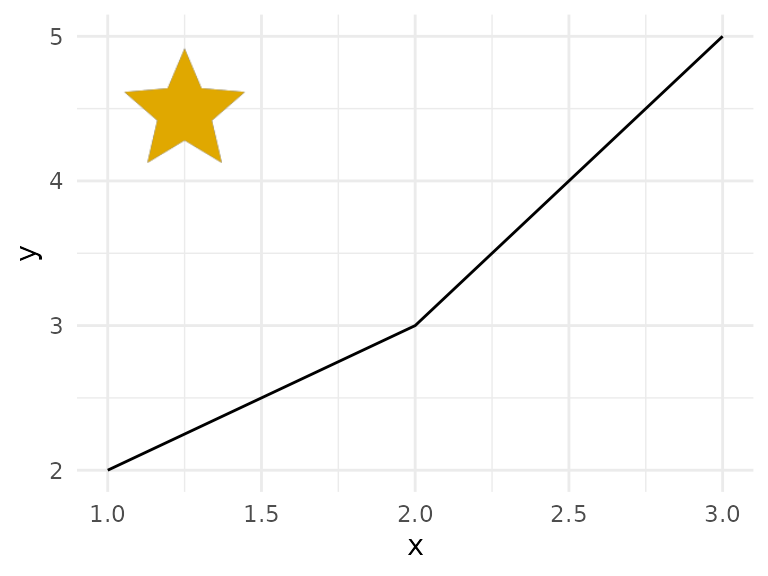

iconifyr wraps the Iconify
API. Icons are identified as prefix:name, for example
mdi:home.
Fetch an icon
svg <- iconify_get("mdi:home", color = "#ba3329", size = 48)
cat(svg)
#> <svg xmlns="http://www.w3.org/2000/svg" width="48" height="48" viewBox="0 0 24 24"><path fill="#ba3329" d="M10 20v-6h4v6h5v-8h3L12 3L2 12h3v8z"/></svg>color, size (height in pixels),
flip and rotate map to the API’s query
parameters.
Find icons
hits <- iconify_search("home", prefixes = c("mdi", "tabler"), limit = 40)
head(hits)
#> id prefix name
#> 1 mdi:home mdi home
#> 2 mdi:home-outline mdi home-outline
#> 3 tabler:home tabler home
#> 4 tabler:home-filled tabler home-filled
#> 5 tabler:home-2 tabler home-2
#> 6 tabler:home-2-filled tabler home-2-filled
sets <- iconify_sets()
head(sets[order(-sets$total), ], 5)
#> prefix name author
#> 9 iconmind IconMind IconMind
#> 88 fluent Fluent UI System Icons Microsoft Corporation
#> 10 iconoven IconOven Appic Marketing
#> 2 material-symbols-light Material Symbols Light Google
#> 1 material-symbols Material Symbols Google
#> license_spdx license_title total
#> 9 MIT MIT 31722
#> 88 MIT MIT 19900
#> 10 MIT MIT 18236
#> 2 Apache-2.0 Apache 2.0 15793
#> 1 Apache-2.0 Apache 2.0 15728
length(iconify_icons("tabler"))
#> [1] 6238Inline icons in R Markdown and Quarto
iconify_html() returns raw HTML, so it works in inline
code. For example,
`r iconifyr::iconify_html("mdi:github", size = 16)` renders
as
.
In a chunk, use results = "asis":
The same function works in Shiny UI code,
e.g. tags$button(iconify_html("mdi:refresh"), "Reload").
Icons in a gt table
ids <- c("mdi:home", "mdi:account", "mdi:cog")
tbl <- data.frame(
id = ids,
icon = vapply(ids, function(x) as.character(iconify_get(x, size = 20)), ""),
stringsAsFactors = FALSE
)
gt::gt(tbl) |>
gt::fmt_markdown(columns = "icon")| id | icon |
|---|---|
| mdi:home | |
| mdi:account | |
| mdi:cog |
Icons in a ggplot
iconify_png() renders through rsvg. To place an icon on
a plot, rasterize the SVG and add it as an annotation.
svg <- iconify_get("mdi:star", color = "#e0a800", size = 128)
img <- rsvg::rsvg_nativeraster(charToRaw(svg), width = 128)
grob <- grid::rasterGrob(img, interpolate = TRUE)
ggplot2::ggplot(data.frame(x = 1:3, y = c(2, 3, 5)), ggplot2::aes(x, y)) +
ggplot2::geom_line() +
ggplot2::annotation_custom(grob, xmin = 1, xmax = 1.5, ymin = 4, ymax = 5) +
ggplot2::theme_minimal()
Save icons
paths <- iconify_download(c("mdi:home", "tabler:star"), dir = tempdir())
basename(paths)
#> [1] "mdi-home.svg" "tabler-star.svg"Caching, retries and self-hosting
- Responses are cached under
tools::R_user_dir("iconifyr", "cache"). Turn this off withoptions(iconifyr.cache = FALSE); wipe it withiconify_cache_clear(). - Requests retry up to 3 times on HTTP 429 and 5xx.
- Point the package at a self-hosted API with
options(iconifyr.api = "https://icons.example.org").